The Role of Variability in Learning Generalization: A Computational Modeling Approach
Dissertation Defense
![]()
Click here to open the dissertation manuscript.
Slides
Presentation slides are available below. You can navigate these sides using the ← and → keys. Press m to display all commands (e.g., press o to switch to slide overview)
Introduction
- Investigate effects of training variability on learning and generalization
- Focus areas: visuomotor skill learning and function learning tasks
Background and Motivation
- Importance of training variability
- Research gaps in visuomotor skill learning
- Previous research in category learning, language learning, and function learning
Common Empirical Patterns
Training
- Both training conditions complete the same number of training trials.
- Varied group has worse training performance.
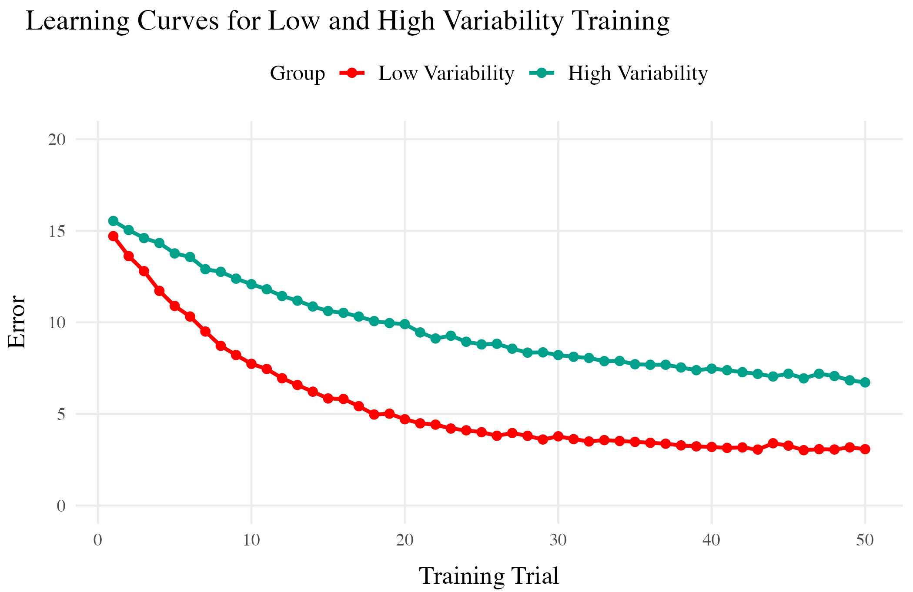
Testing
- Tested from novel conditions.
- Varied group has better test performance
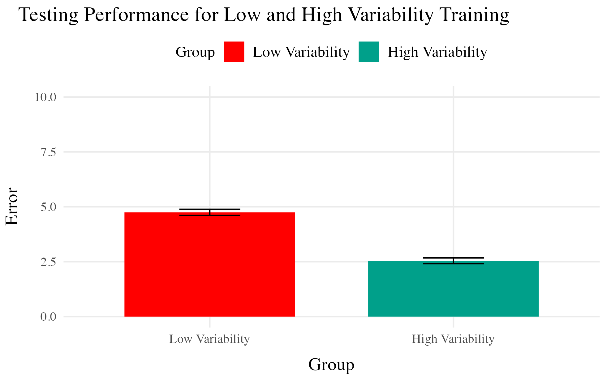
But also plenty of contradictory results and complications
- Cases where varied training makes no difference
- Cases where more training variation results in worse outcomes
- Cases where the influence of variation interacts with some other factor
- difficulty
- prior knowledge
- Frequency effects, or amount of training/learning before testing
Theoretical Frameworks
- Schema Theory (Schmidt, 1975)
- Desirable Difficulties Framework (Bjork & Bjork, 2011)
- Challenge Point Framework (Guadagnoli & Lee, 2004)
Overview of Current Work
- Project 1: Visuomotor projectile launching task
- Project 2: Visuomotor extrapolation task
Project 1 - Hit The Target (HTT)
- Influence of varied practice in a projectile launching task
- Experiments 1 & 2:
- Constant vs. varied training groups
- Performance metrics and transfer testing
Project 1 - Task & Procedure

- Training Stage - 200 training trials. Constant groups throws from single position. Varied group 60 trials from 2 locations.
- Transfer Stage - All subjects tested from both positions they were trained, and the positions trained by other group
- Data recorded - For every throw, recorded the X velocity and Y velocity of ball at release
Project 1 - Manipulations
Experiment 1
- Train a varied group from 2 positions, and a constant group from 1. Then test both groups, from the training positions and a novel position.
Experiment 2
- 6 constant conditions, each trained from a unique location, and a varied condition trained from 2 locations
Project 1 - Results
Experiment 1
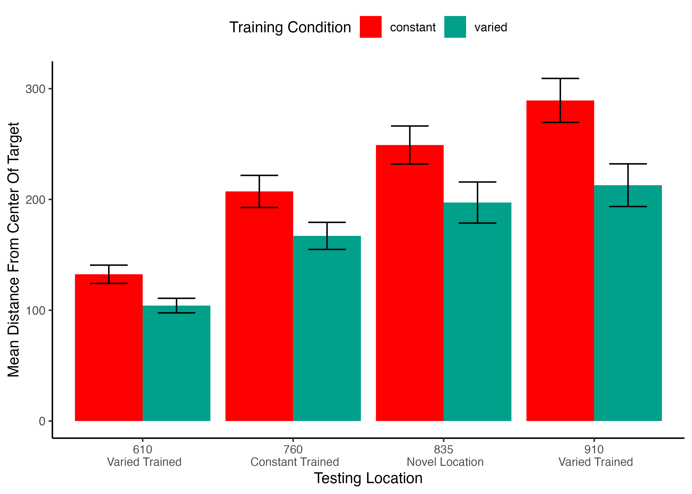
Experiment 2
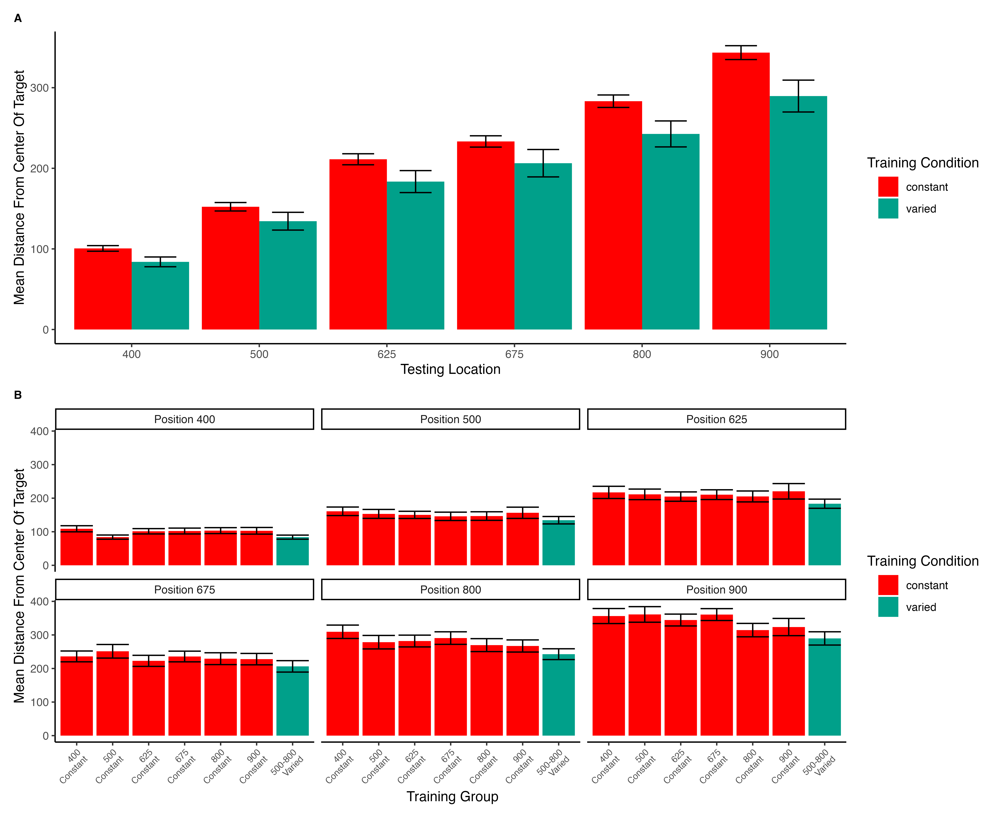
Project 1 - Discussion
- Varied training group’s superior performance
- Computational modeling results with IGAS
- Theoretical implications
Project 1 Computational Model
Model of Similarity between training and solutions

Project 1 Computational Model
- For each subject, compute similarity between training throws and each of the 6 testing locations
- Test whether similarity explains the difference in performance between Constant and Varied conditions
- Assuming equivalent generalization (1 c for both groups) - similarity improves model fit, but does not explain group difference
- Assume training condition influences generalization gradient (fit c separately) - now similarity does explain the difference between Constant and Varied.
Project 1 General Discussion
Project 2 - Variability and Extrapolation in a Function Learning Task
- Influence of varied practice in a function learning task
- Experiments 1, 2, and 3:
- Training regimes and testing conditions
- Learning, discrimination, and extrapolation performance metrics
Project 2 - Questions and Goals
Empirical - Design a task-space large enough to assess multiple degrees of extrapolation - Compare varied and constant generalization from several distinct distances from their nearest training condition
Model-based - If variation does influence extrapolation, can a connectionist model with similarity-based activation provide a good account? - Can our modelling framework simultaneously account for both training and testing data? - Accounting for the full distribution of responses
Project 2 - Methodology
- A total of 156 participants from IU’s online subject pool
- Varied group trains from 3 “velocity bands”, constant group from 1
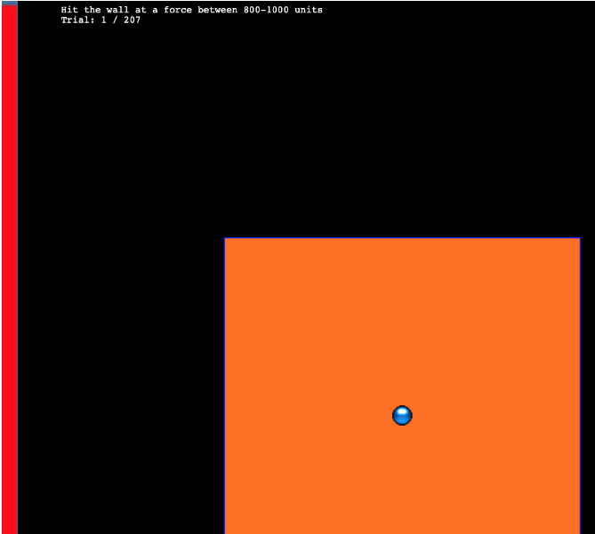
Project 2 - Methodology
Project 2 - Experiment 1 Results
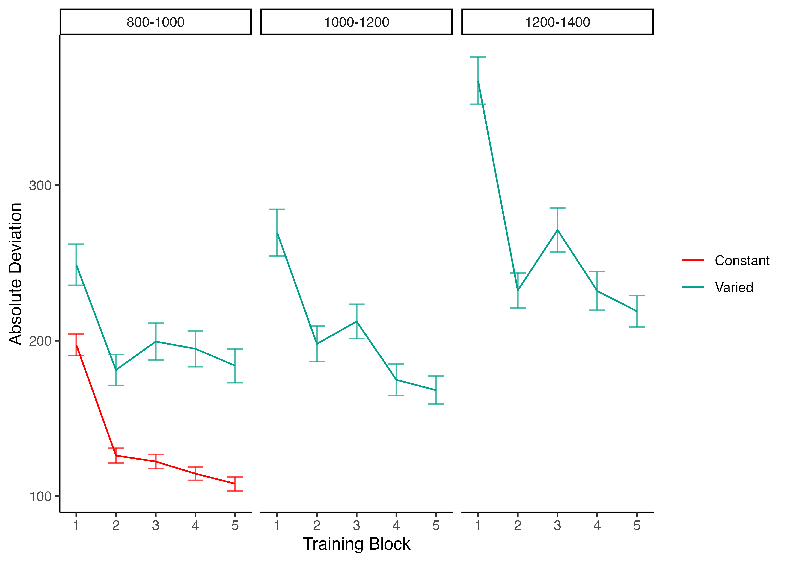
Project 2 - Experiment 1 Results

Project 2 - Experiment 2 Design
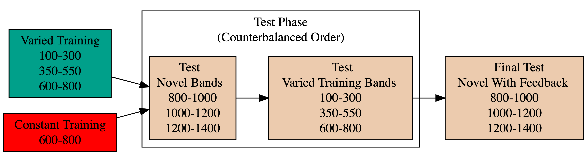
Project 2 - Experiment 2 Results

Project 2 - Experiment 2 Results
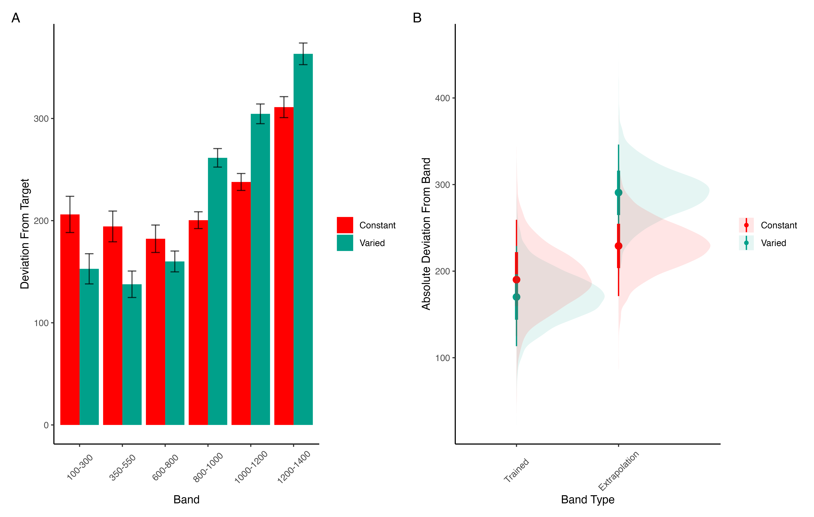
Project 2 - Experiment 2 Results
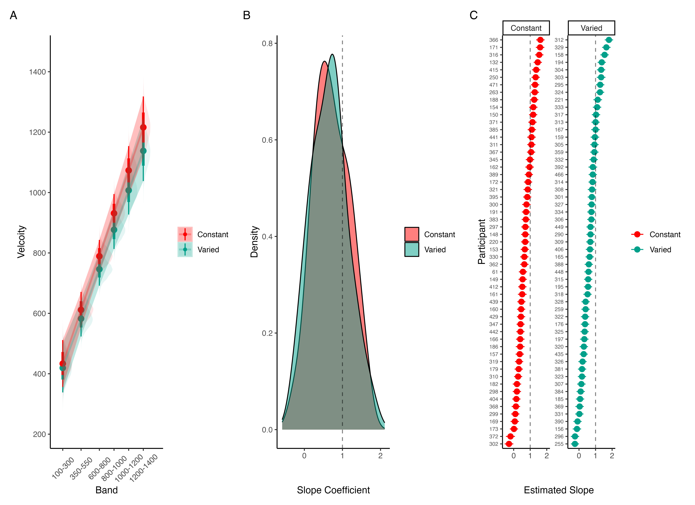
Project 2 - Experiment 3 Design
- Ordinal feedback
- Include both the original order (E1) and reverse order (E2)
Project 3 - Experiment 3 Results

Project 3 - Experiment 3 Results
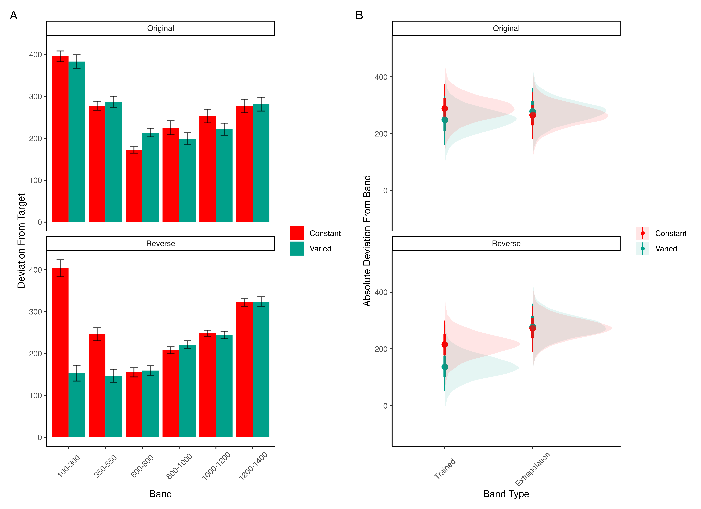
Project 3 - Experiment 3 Results
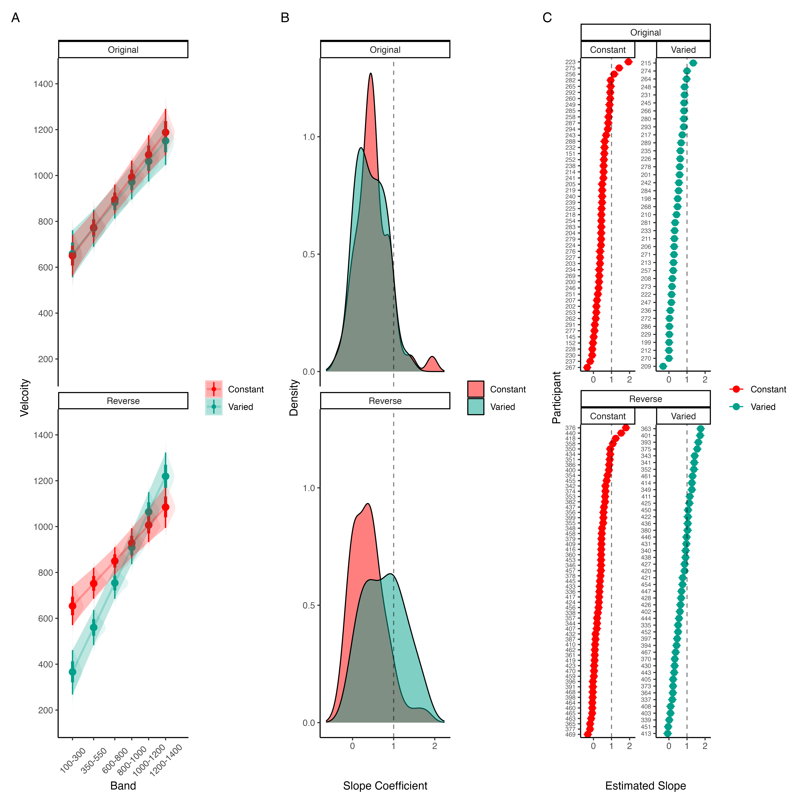
Project 2 - ALM
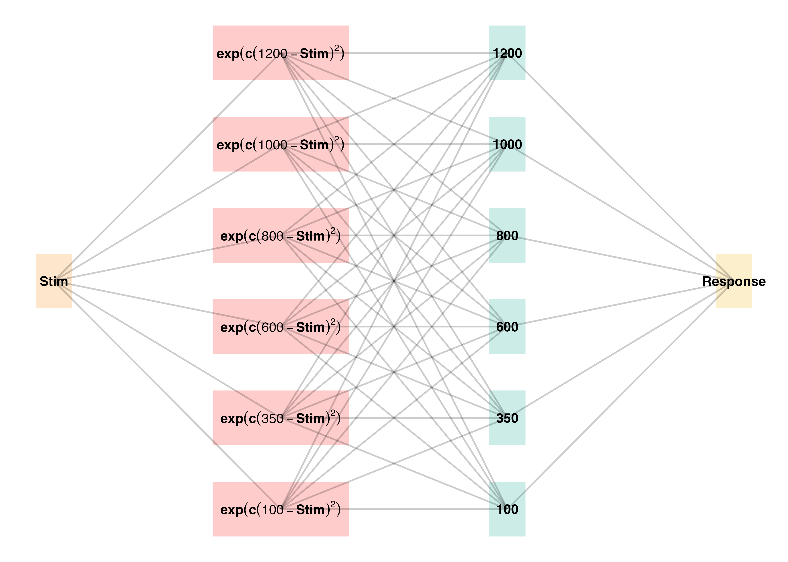
ALM
| ALM Response Generation | ||
|---|---|---|
| Input Activation | \(a_i(X) = \frac{e^{-c(X-X_i)^2}}{\sum_{k=1}^M e^{-c(X-X_k)^2}}\) | Input nodes activate as a function of Gaussian similarity to stimulus |
| Output Activation | \(O_j(X) = \sum_{k=1}^M w_{ji} \cdot a_i(X)\) | Output unit \(O_j\) activation is the weighted sum of input activations and association weights |
| Output Probability | \(P[Y_j|X] = \frac{O_j(X)}{\sum_{k=1}^M O_k(X)}\) | The response, \(Y_j\) probabilites computed via Luce’s choice rule |
| Mean Output | \(m(X) = \sum_{j=1}^L Y_j \cdot \frac{O_j(x)}{\sum_{k=1}^M O_k(X)}\) | Weighted average of probabilities determines response to X |
| ALM Learning | ||
| Feedback | \(f_j(Z) = e^{-c(Z-Y_j)^2}\) | feedback signal Z computed as similarity between ideal response and observed response |
| magnitude of error | \(\Delta_{ji}=(f_{j}(Z)-o_{j}(X))a_{i}(X)\) | Delta rule to update weights. |
| Update Weights | \(w_{ji}^{new}=w_{ji}+\eta\Delta_{ji}\) | Updates scaled by learning rate parameter \(\eta\). |
EXAM
| EXAM Response Generation | ||
|---|---|---|
| Instance Retrieval | \(P[X_i|X] = \frac{a_i(X)}{\sum_{k=1}^M a_k(X)}\) | Novel test stimulus \(X\) activates input nodes \(X_i\) |
| Slope Computation | \(S = \frac{m(X_{1})-m(X_{2})}{X_{1}-X_{2}}\) | Slope value, \(S\) computed from nearest training instances |
| Response | \(E[Y|X_i] = m(X_i) + S \cdot [X - X_i]\) | Final EXAM response is the ALM response for the nearest training stimulus, \(m(X_i)\), adjusted by local slope \(S\). |
Project 2 - Model Fitting Procedure
Approximate Bayesian Computation
Modelling Results
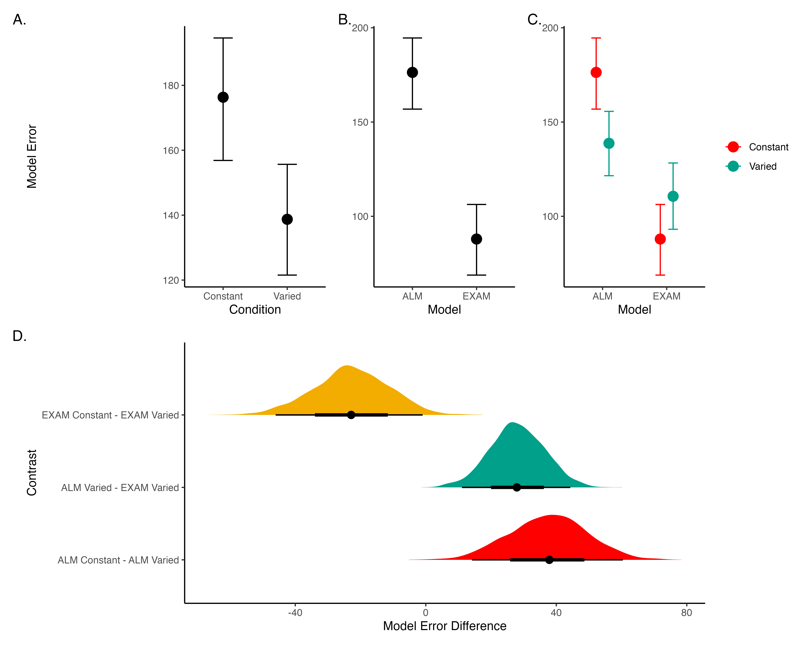
General Discussion
- Compare HTT and HTW
- Empirical findings summary
- Computational modeling contributions
Comparison
| Dimension | HTT (Project 1) | HTW (Project 2) |
|---|---|---|
| Task Description | Projectile launching to hit a target | Projectile launching to hit wall at a specific velocity |
| Task Complexity | More complex parabolic trajectory, both x and y velocities relevant to outcome | Simpler 1D mapping of force to outcome. Only x velocity is relevant. |
| Task Space | More complex: xy velocity combinations closer to the solution space may still result in worse feedback due to striking the barrier. | Simpler: smooth, linear mapping between velocity and feedback. |
| Perceptual salience of Varied Conditions | Varied conditions (# of throwing distances) are perceptually distinct, i.e. salient differences in distance between launching box and target. | Varied conditions (# of velocity bands) are less salient - only difference is the numeral displayed on screen. |
| Testing Feedback | Testing always included feedback | Primary testing stage had no feedback. |
| Potential for Learning during Testing | Limited potential for learning during testing due to feedback. | Some potential for learning during no-feedback testing by observing ball trajectory. |
| Training Experience | Varied group gets half as much experience on any one position as the constant group. | Varied group gets 1/3 as much experience on any one velocity band as the constant group. |
| Testing Structure | Random interleaving of trained/transfer testing distances. | Blocked structure, separately testing trained vs extrapolation testing bands. |
Theoretical Contributions
- Insights into training variability effects on learning and generalization
- Computational models applications
Practical Implications
- Training programs design implications
- Future research considerations
Limitations and Future Directions
- Study limitations
- Future research suggestions
Conclusion
- Recap of key findings
- Final thoughts on training variability’s role in learning
Questions and Discussion
- Open floor for questions from the committee and audience
Future Research Directions
Theoretical Extensions
- Investigate the role of individual differences in training variability effects.
- Explore the impact of different types of feedback on learning and generalization.
- Examine the influence of task complexity on the benefits of varied training.
Methodological Innovations
- Develop new experimental paradigms to test training variability in more complex tasks.
- Utilize advanced computational models to simulate learning processes under varied conditions.
- Implement longitudinal studies to assess long-term effects of training variability.
Practical Applications
- Design adaptive training programs that adjust variability based on learner performance.
- Apply findings to educational settings to enhance learning outcomes.
- Use insights to improve training protocols in professional skill development.
Collaborative Opportunities
- Partner with educational institutions to test training variability in classroom settings.
- Collaborate with industry professionals to apply research findings in real-world training programs.
- Engage with interdisciplinary teams to explore the broader implications of training variability.